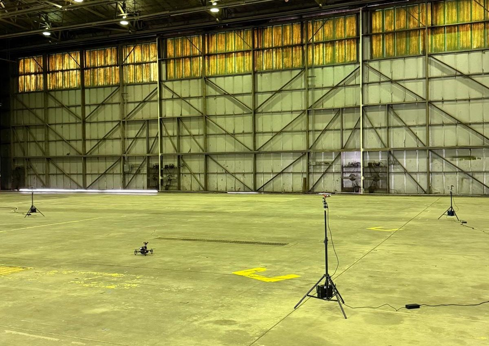
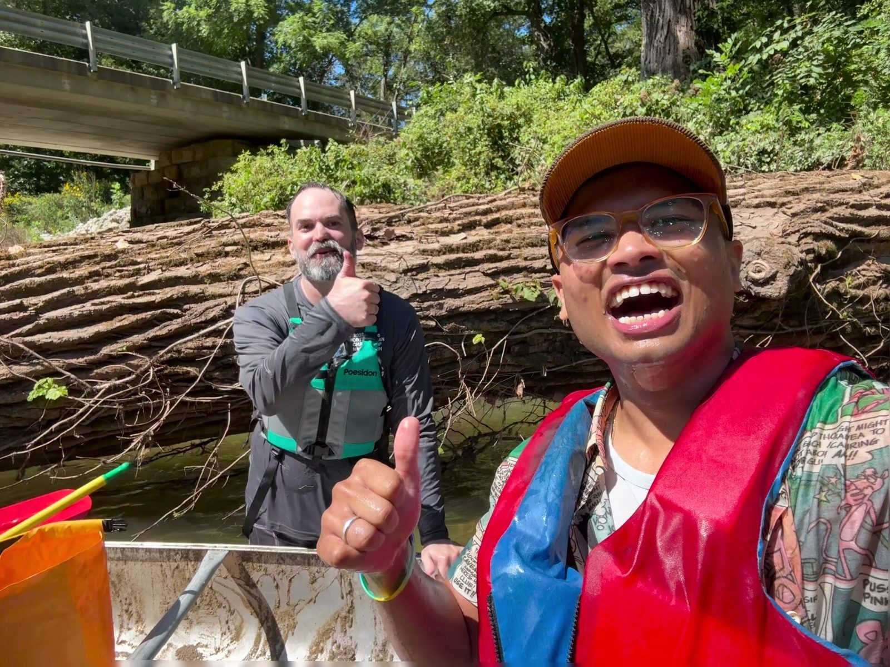
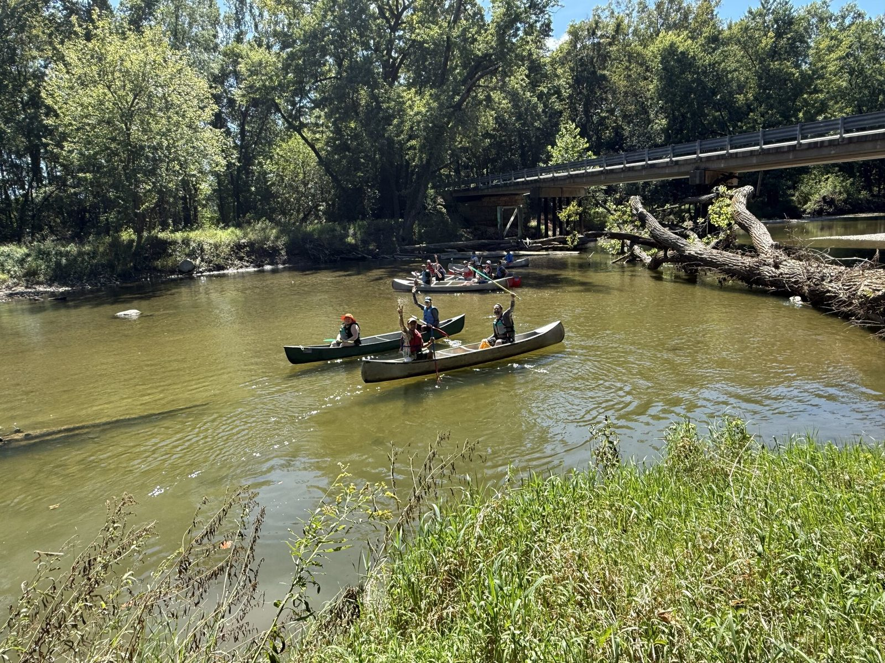

Why it matters
9–28×
worse drone tracking when every camera’s pose is off by 5° and 30 cm, measured against motion capture on real hardware with offline bundle adjustment: centimetres become about a metre.
Siddharth Anand · Purdue University
I’m a graduate student at Purdue. My current research calibrates networks of cheap cameras using the flight logs of the drones they track.
An illustration of the idea, not data. The readout is the average pointing error of the four cameras.
Why it matters
9–28×
worse drone tracking when every camera’s pose is off by 5° and 30 cm, measured against motion capture on real hardware with offline bundle adjustment: centimetres become about a metre.
Now
A joint effort with computer-vision researchers: they detect the drone, I work out where the cameras are.
Teaching
245students
Head TA for the Control Systems Laboratory at Purdue, Fall 2026: 15 lab sections of up to 18 students.
Before Purdue
IIT Bombay dual degree in Electrical Engineering and Control & Computing, 2025, with a semester at KAIST in 2023.
Phone cameras can track a drone well only if they know exactly where they are. In the field there is no motion-capture rig and no calibration wand. Every flight does have one thing: the drone’s own navigation log. I turn that log into a calibration target, and work out which flights teach the most.
A camera measures angles. A 5° error in the camera’s extrinsic rotation moves every pixel by the same amount whether the drone is 10 m or 100 m away. A 30 cm error in its position fades with distance. The rotation is the part that has to be right.
A 4K phone camera, focal length about 2,700 px. First-order geometry. Measured on hardware: 5° and 30 cm in every camera makes tracking 9–28× worse.
If cameras are only asked to put the triangulated drone on its logged path, they can end up far from where they stand, with rays that miss the drone by hundreds of pixels. Adding one term that asks the rays to actually meet makes the answer unique.
Off: the rays miss the drone, yet the triangulated point can still sit on the log.
Zooming in and stepping closer look the same to a camera unless the drone changes distance. An estimation-theory analysis ranks flights: cover at least a 3× range of distances, and climb at both the near and the far distance.
Uncertainty in focal length on a log scale (shorter is better) for a 60 s flight seen by three cameras, at the middle of each range. A Cramér–Rao bound, not a measured error.
The drone’s altitude comes from a barometer. A barometer error that grows with height looks exactly like an error in every camera’s roll and pitch angles, and the offset changes at every power-up. The cameras can only be as right as the log they are fitted to, so I always report the raw error next to the offset-removed one.

Research · Purdue, 2026–
Pose, focal length and clock for every camera from one flight, with flight-design rules from an estimation-theory analysis. A paper on the offline work is in preparation.
Explore the research ›Course project · Spring 2026
Lie-group particle and Kalman filters tracking a drone with several cameras, tested in simulation, in a digital twin and on motion-capture hardware. A 5° and 0.30 m pose error makes tracking 9–28× worse, with an online filter or with offline bundle adjustment.
View on GitHub ›Lab infrastructure
A validated Gazebo model of the lab’s three-camera drone-tracking rig, used to reproduce the lab’s experiments in simulation.
View on GitHub ›Dual-degree project · IIT Bombay, 2024–25
A pursuer drone that keeps an evader in view with camera-guided gimbal control and a 3D Voronoi chase strategy, simulated in Cosys-AirSim and Unreal Engine 5.4. Supervised by Prof. Debraj Chakraborty.
View on GitHub ›Course · Fall 2025
Six labs from rover motion to formation control, blimp altitude and heading control, and a final chaser–evader mission, in MATLAB and Simulink.
View on GitHub ›Internship · ideaForge, summer 2022
Model-based and reinforcement-learning approaches to stabilizing pan-tilt-zoom payloads on UAVs, plus line-of-sight optimization for drone mapping. Guided by Prof. Debraj Chakraborty.
Internship · HireQuotient, summer 2024
A document-grounded chatbot on a vector database, and a generative-AI outreach system that deletes, enriches and triggers outreach from prompts, with backend work in JavaScript.
Internship · rupyy (CarDekho Group), summer 2023
An ETL pipeline from RDS to S3 with batch and streaming on AWS Lambda, and an LLM (FLAN-T5) system that answers questions from PDFs.
Research exposition · IIT Bombay, 2024
Core-set selection with VGG features on CIFAR-10 and CRC-VAL-HE-7K: 81.3% test accuracy at batch size 256 after 50 epochs. Supervised by Prof. Amit Sethi.
Student team · IIT Bombay, 2021–22
Control architecture for a Hyperloop pod, including sensor fusion and communication protocols. Selected among the top teams in the Stage-1 documentation review at European Hyperloop Week.
AAE 364 at Purdue. Fall 2026: 245 students in 15 lab sections.
Purdue UAS Research and Test Facility, with Prof. James Goppert. Multi-camera drone tracking, then camera calibration from flight logs.
Purdue University, West Lafayette. Major in Autonomy and Control.
Dual degree: Electrical Engineering and Control & Computing. Valedictorian of the Control & Computing group, 2025.
AI agents, vector search and outreach automation.
One of two Indian students selected. Also a summer as Cloud Computing Intern at rupyy (CarDekho Group).
Camera-payload stabilization for UAVs.
Control architecture for the pod, and lead panelist for the Electrical Engineering newsletter.
At IIT Bombay I specialized in Control & Computing, in Electrical Engineering. The coursework was rigorous and I enjoyed it, but I wanted applications. I think of myself more as an applied engineer than a pure theorist.
Prof. Debraj Chakraborty taught my controls course, gave me the chance to intern at ideaForge, and later supervised my dual-degree project on anti-drone pursuit–evasion. A lot of my philosophy and research style comes from him.
I came to work on autonomy and control of aerial vehicles and joined Prof. James Goppert’s group. I started with how camera pose affects tracking, using Lie-group methods. Now I work on calibrating phone cameras from a drone’s own flight log, alongside computer-vision researchers. I also maintain the team’s data repository.
Next is a paper on the offline work, then online estimation with PTZ cameras, where the extrinsic angles and the zoom change over time. For me, research is a response to an inherent calling: my contribution to society.

